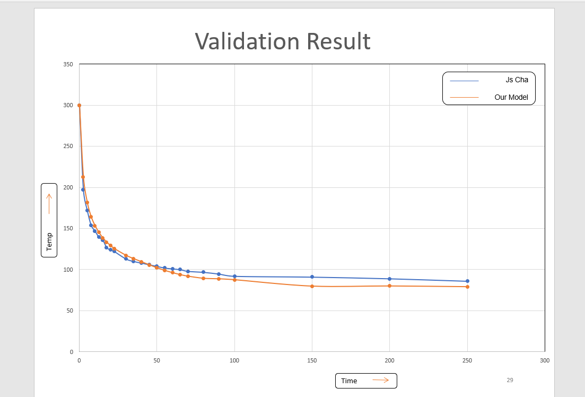
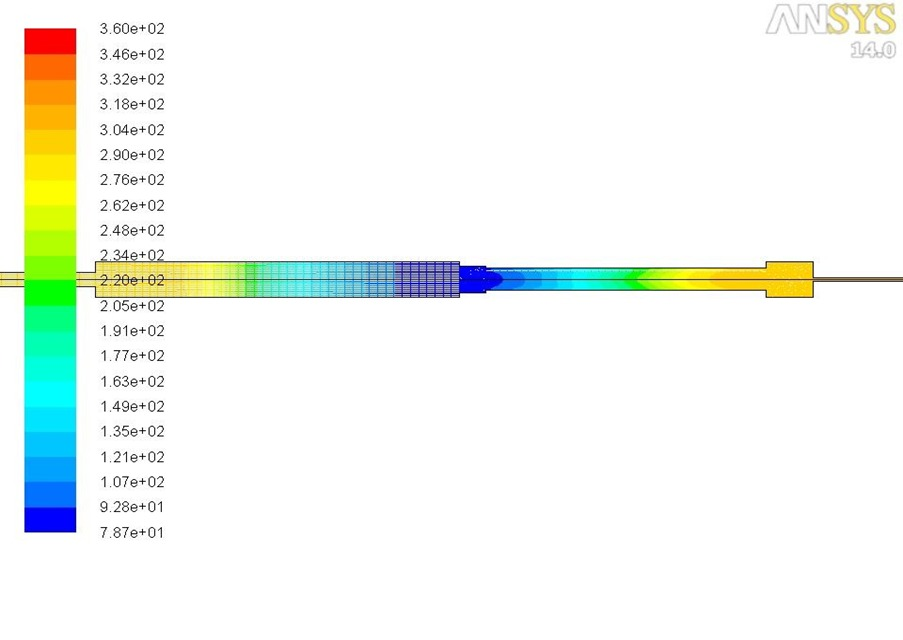
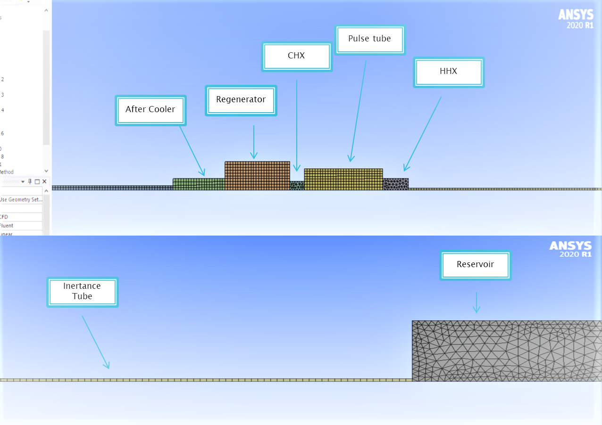

PROJECT OVERVIEW
Cryogenic refrigeration is essential for applications in space science, superconductivity, and infrared sensors—where conventional mechanical refrigeration is impractical. This project focused on the design, modeling, and simulation of a hybrid mesh-type inertance pulse tube cryocooler (PTC) capable of reaching cryogenic temperatures below 77 K.
The aim was to:
- Design a novel configuration integrating a porous media-based regenerator with a dynamically mesh-modeled pulse tube.
- Simulate fluid and thermal behavior to reduce cooldown time and achieve higher thermal efficiency compared to standard geometries
METHODS & APPROACH
DESIGN PHASE
- Designed key components of the PTC: compressor, regenerator, pulse tube, inertance tube, and cold-end reservoir using theoretical sizing correlations.
- Incorporated stainless steel mesh regenerator, which was modeled using porous media theory for flow resistance and heat exchange.
SIMULATION-SETUP-(ANSYS FLUENT):
- Geometry: Created using SolidWorks and imported to ANSYS Fluent via DesignModeler.
- Meshing: Employed a structured hexahedral mesh with local refinement near boundary layers.
- Solver Settings:
- Transient pressure-based solver
- Laminar flow assumption (Re < 1000)
- Ideal gas properties with temperature dependence
- Energy equation activated for heat transfer modeling
- Boundary Conditions:
- Compressor modeled as a time-varying pressure inlet using a user-defined function (UDF) mimicking sinusoidal oscillation.
- Ambient walls assigned with natural convection boundary conditions.
- Porous zone defined in the regenerator with anisotropic resistance and high effective thermal conductivity.
RESULT AND ANALYSIS
- Temperature Profile:
- Achieved cooldown to < 70 K at the cold end (reservoir) within 120 seconds, compared to ~210 seconds in earlier baseline models.
- Validated flow reversal and regenerative heat exchange through phase-angle-based mass flux analysis.
- Velocity and Pressure Dynamics:
- Observed phase lag between pressure and flow velocity across the regenerator and pulse tube—critical for enthalpy transport and cooling effectiveness.
- Verified inertance tube damping behavior through pressure fluctuation amplitude decay.
- Porous Media Validation:
- Demonstrated heat exchange enhancement using stainless steel mesh regenerator over packed spheres or no-regenerator cases.


TOOLS & TECHNOLOGIES
- Design Tools: SolidWorks 2020
- Simulation Tools: ANSYS Fluent 2020 R2, MATLAB (for post-processing), Excel
- Key Modeling Techniques: Porous media flow, dynamic mesh simulation, transient pressure inputs, thermal-fluid couplin
KEY CHALLENGES & RESOLUTIONS
- Challenge: Oscillating boundary condition at the compressor inlet. Solution: Implemented a UDF-driven sinusoidal pressure variation in Fluent using C programming.
- Challenge: Mesh instability due to moving boundaries Solution: Optimized time step and mesh deformation control to maintain CFL stability.
- Challenge: Modeling realistic regenerator performance Solution: Used validated porous media parameters from published literature and tuned viscous/inertial resistance to match expected pressure drop.
IMPACT & FUTURE SCOPE
- This simulation framework offers a robust toolset for optimizing cryocooler performance before fabrication, potentially reducing development cycles.
- The inertance-type PTC design is suited for space-constrained and vibration-sensitive applications like space satellites and quantum computing systems.
- Future Work:
- Integrate with experimental validation rigs.
- Explore multilayer regenerators with variable porosity.
- Apply meshless methods or reduced-order models for faster design iterations.
| Component | Length (mm) | Inner Diameter (mm) | Remarks |
|---|---|---|---|
| Compressor Chamber | 70 | 20 | Oscillating pressure inlet applied via UDF |
| Regenerator | 100 | 15 | Modeled as porous media (SS mesh) |
| Pulse Tube | 120 | 15 | Straight cylindrical tube, rigid walls |
| Inertance Tube | 500 | 3 | Damped oscillations, critical for phase shift |
| Reservoir (Cold End) | 50 | 25 | Reservoir (Cold End) 50 25 Acts as a buffer and cooling output zone |
| Zone | Boundary Condition Type | Value / Method | Purpose |
|---|---|---|---|
| Compressor Inlet | Time-Varying Pressure Inlet | P(t)=P0+A⋅sin(2πft)P(t) = P_0 + A \cdot \sin(2\pi f t) | Simulates oscillating compressor input |
| Regenerator Walls | Wall with Natural Convection | h=5 W/m2⋅K,T∞=300 Kh = 5 \, \text{W/m}^2\cdot\text{K}, T_\infty = 300\,K | Ambient heat rejection |
| Regenerator Domain | Porous Media Model | keff=10 W/mKk_{\text{eff}} = 10 \, \text{W/mK}, inertial & viscous loss coefficients tuned | Simulates stainless steel mesh resistance |
| Pulse Tube Walls | Adiabatic Wall (No heat flux) | - | Assumes minimal heat transfer through tube |
| Reservoir End Face | Pressure Outlet | Gauge Pressure = 0 Pa | Allows flow to escape, mimics cold sink |
| Parameter | Value | Notes |
|---|---|---|
| Working Fluid | Helium | Ideal gas properties with temp. dependency |
| Operating Frequency | 30 Hz | Compressor oscillation frequency |
| Simulation Duration | 0–150 seconds (transient) | Captures cooldown behaviour |
| Time Step | 0.001 seconds | Ensures temporal resolution and convergence |
